湖南省2021年普通高中学业水平选择性考试
化学
注意事项：
1.答卷前，考生务必将自己的姓名、准考证号填写在本试卷和答题卡上。
2.回答选择题时，选出每小题答案后，用铅笔把答题卡上对应题目的答案标号涂黑。如需改动，用橡皮擦干净后，再选涂其他答案标号。回答非选择题时，将答案写在答题卡上。写在本试卷上无效。
3.考试结束后，将本试卷和答题卡一并交回。
可能用到的相对原子质量：H:1 C:12 N:14 O:16 F:19 Na:23 Mg:24 Si:28 Cl:35.5 Ge:73 Br:80 I:127
相关题目：第 1 题 · 第 2 题 · 第 3 题 · 第 4 题 · 第 5 题 · 第 6 题 · 第 7 题 · 第 8 题 · 第 9 题 · 第 10 题 · 第 11 题 · 第 12 题 · 第 13 题 · 第 14 题 · 第 15 题 · 第 16 题 · 第 17 题 · 第 18 题 · 第 19 题
一、选择题：本题共10小题，每小题3分，共30分。在每小题给出的四个选项中，只有一项是符合题目要求的。
相关题目：第 1 题 · 第 2 题 · 第 3 题 · 第 4 题 · 第 5 题 · 第 6 题 · 第 7 题 · 第 8 题 · 第 9 题 · 第 10 题
返回原卷说明与相对原子质量 返回单项选择题说明
题目与已知条件
下列有关湘江流域的治理和生态修复的措施中，没有涉及到化学变化的是
A. 定期清淤，疏通河道
B. 化工企业“三废”处理后，达标排放
C. 利用微生物降解水域中的有毒有害物质
D. 河道中的垃圾回收分类后，进行无害化处理
查看原题图／原始配图
所用高中知识
物理变化与化学变化的判据是有无新物质生成。
读题与思路
清淤疏通只改变位置与形态，A为物理过程；废物无害化、微生物降解和通常的三废处理均会涉及化学转化。
分步解析
- 清淤、疏通河道主要是搬运沉积物、改变其位置，不以生成新物质为目的，属于物理过程。
- 三废处理常有中和、氧化等反应；微生物降解改变污染物化学组成；垃圾无害化处理常含焚烧或化学、生物处理，均涉及化学变化。
检查与易错点
分类回收本身可以是物理过程，但D还写了后续无害化处理，不能把后半句漏掉。
本题来源：paper2021 · doc-paper
返回原卷说明与相对原子质量 返回单项选择题说明
题目与已知条件
下列说法正确的是
A. 糖类、蛋白质均属于天然有机高分子化合物
B. FeO粉末在空气中受热，迅速被氧化成Fe₃O₄
C. SO₂可漂白纸浆，不可用于杀菌、消毒
D. 镀锌铁皮的镀层破损后，铁皮会加速腐蚀
查看原题图／原始配图
所用高中知识
天然高分子、Fe(Ⅱ)氧化、SO₂用途、牺牲阳极保护。
读题与思路
FeO在空气加热被氧化成Fe₃O₄，B正确。糖类含单糖、双糖，不能都称高分子；SO₂可杀菌；镀锌层局部破损时锌仍作为较活泼牺牲阳极保护铁，其他项不成立。
分步解析
- 糖类包括葡萄糖等小分子，不能说糖类均为高分子，A错误。
- FeO在空气中受热可迅速氧化为Fe₃O₄：6FeO+O₂→2Fe₃O₄，B正确。
- SO₂除漂白纸浆外，也有杀菌用途，C排除了实际性质。锌比铁活泼，镀层破损时Zn作负极优先腐蚀，对Fe仍有保护，D错误。
检查与易错点
镀锌和镀锡破损后的情况不同；不能见到“镀层破损”就认为铁必然加速腐蚀。
本题来源：paper2021 · doc-paper
返回原卷说明与相对原子质量 返回单项选择题说明
题目与已知条件
下列实验设计不能达到实验目的的是
|
实验目的 |
实验设计 |
| A |
检验溶液中FeSO₄是否被氧化 |
取少量待测液，滴加KSCN溶液，观察溶液颜色变化 |
| B |
净化实验室制备的Cl₂ |
气体依次通过盛有饱和NaCl溶液、浓H₂SO₄的洗气瓶 |
| C |
测定NaOH溶液的pH |
将待测液滴在湿润的pH试纸上，与标准比色卡对照 |
| D |
工业酒精制备无水乙醇 |
工业酒精中加生石灰，蒸馏 |
A. A B. B C. C D. D
查看原题图／原始配图
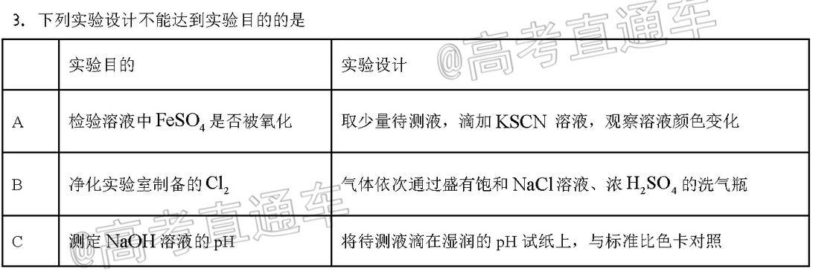
原始配图 1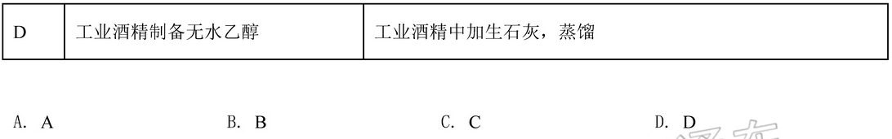
原始配图 2所用高中知识
Fe³⁺显色、氯气除杂干燥、pH试纸、乙醇脱水。
读题与思路
测pH的试纸须干燥；润湿会稀释NaOH，使读数偏向中性，因此C不能达到测原液pH的目的。KSCN检Fe³⁺、食盐水后浓硫酸净化Cl₂、生石灰除水后蒸馏乙醇，均各有对应原理。
分步解析
- 取样加KSCN若显红色，说明出现Fe³⁺，可检验FeSO₄的氧化，A可行。
- 氯气先经饱和NaCl溶液除HCl，再经浓硫酸除水，顺序正确。工业酒精加入CaO消耗水，再蒸馏乙醇，D可行。
- 湿润pH试纸上的水会稀释NaOH，使其pH读数偏低；应把待测液滴于干燥试纸。
检查与易错点
量气、测pH等实验都应避免先改变待测对象；不是任何试纸都必须先润湿。
本题来源：paper2021 · doc-paper
返回原卷说明与相对原子质量 返回单项选择题说明
题目与已知条件
己二酸是一种重要的化工原料，科学家在现有工业路线基础上，提出了一条“绿色”合成路线：
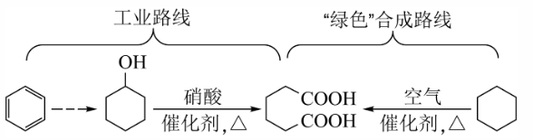
下列说法正确的是
A. 苯与溴水混合，充分振荡后静置，下层溶液呈橙红色
B. 环己醇与乙醇互为同系物
C. 己二酸与NaHCO₃溶液反应有CO₂生成
D. 环己烷分子中所有碳原子共平面
查看原题图／原始配图
所用高中知识
萃取、同系物定义、羧酸酸性、环烷烃构型。
读题与思路
己二酸有两个羧基，可与NaHCO₃放CO₂，所以C成立。苯萃取溴后有色有机层在上；环己醇有环而乙醇无环，不相差简单nCH₂而不能作同系物；环己烷为非平面构象。
分步解析
- 苯萃取溴后位于上层，橙红色应主要在上层有机相，A层位错误。
- 环己醇有环，乙醇无环；两者分子组成并非仅相差若干CH₂，不能判同系物。
- 己二酸含两个羧基，能与NaHCO₃反应释放CO₂，C正确。环己烷采取非平面构象，D错误。
检查与易错点
题给绿色路线避免硝酸氧化路线的一些副产物，但不改变羧酸的基本反应。
本题来源：paper2021 · doc-paper
返回原卷说明与相对原子质量 返回单项选择题说明
题目与已知条件
NA为阿伏加德罗常数的值。下列说法正确的是
A. 18 g H₂18O含有的中子数为10NA
B. 0.1 mol·L⁻¹ HClO₄溶液中含有的H⁺数为0.1NA
C. 2 mol NO与1 mol O₂在密闭容器中充分反应后的分子数为2NA
D. 11.2 L CH₄和22.4 L Cl₂(均为标准状况)在光照下充分反应后的分子数为1.5NA
查看原题图／原始配图
所用高中知识
同位素摩尔质量、浓度体积、NO₂二聚、取代计量。
读题与思路
H₂¹⁸O摩尔质量20，18g为0.9mol，10个中子/分子给9NA；高氯酸溶液未给体积；NO₂还可二聚。甲烷氯代每步均是2个分子变2个分子，总分子量0.5+1=1.5mol保持，所以D成立。
分步解析
- H₂¹⁸O摩尔质量20 g·mol⁻¹，18 g为0.9 mol，每分子10个中子，故9Nₐ，不是10Nₐ。
- 仅给HClO₄浓度而未给体积，不能确定H⁺总数。2NO+O₂生成NO₂后还会二聚为N₂O₄，最终分子数不严格为2Nₐ。
- CH₄为0.5 mol、Cl₂为1 mol，初始分子的总物质的量为1.5 mol。每次R—H+Cl₂→R—Cl+HCl都是2个分子变2个，连续取代仍保持总数，故为1.5Nₐ。
检查与易错点
这里计所有分子，包括可能液态有机产物；不能把总分子数误当最终气体物质的量。
本题来源：paper2021 · doc-paper
返回原卷说明与相对原子质量 返回单项选择题说明
题目与已知条件
一种工业制备无水氯化镁的工艺流程如下：
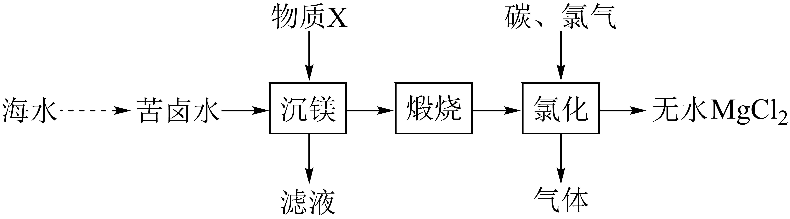
下列说法错误的是
A. 物质X常选用生石灰
B. 工业上常用电解熔融MgCl₂制备金属镁
C. “氯化”过程中发生的反应为MgO+C+Cl₂MgCl₂+CO
D. “煅烧”后的产物中加稀盐酸，将所得溶液加热蒸发也可得到无水MgCl₂
查看原题图／原始配图
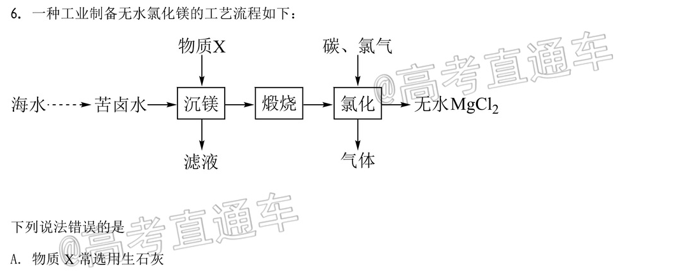
原始配图 1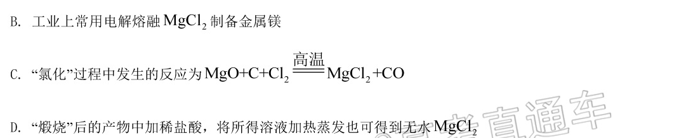
原始配图 2所用高中知识
沉淀镁、氧化镁碳氯化、盐类水解和金属冶炼。
读题与思路
CaO可提供OH⁻沉镁，熔融MgCl₂可电解，MgO+C+Cl₂→MgCl₂+CO配平。水溶液MgCl₂直接蒸干会水解，不能直接取得无水MgCl₂，因此D错。
分步解析
- CaO遇水生成Ca(OH)₂，提供OH⁻使Mg²⁺沉为Mg(OH)₂，煅烧得MgO，A成立。
- 熔融MgCl₂电解得Mg；MgO+C+Cl₂→MgCl₂+CO各元素守恒，C中的碳协助移走氧，B、C成立。
- MgCl₂水溶液直接蒸发加热会发生水解，失水同时易转为碱式盐、最终MgO；不能据此制得纯无水MgCl₂，D错误。
检查与易错点
制无水MgCl₂通常要控制水解，例如在干燥HCl气流保护下脱水；本题的碳氯化直接制无水盐。
本题来源：paper2021 · doc-paper
返回原卷说明与相对原子质量 返回单项选择题说明
题目与已知条件
W、X、Y、Z为原子序数依次增大的短周期主族元素，Y的原子序数等于W与X的原子序数之和，Z的最外层电子数为K层的一半，W与X可形成原子个数比为2：1的18e⁻分子。下列说法正确的是
A. 简单离子半径：Z>X>Y
B. W与Y能形成含有非极性键的化合物
C. X和Y的最简单氢化物的沸点：X>Y
D. 由W、X、Y三种元素所组成化合物的水溶液均显酸性
查看原题图／原始配图
所用高中知识
肼的电子数、等电子体半径、非极性键、氢键和酸碱性。
读题与思路
Z最外层1电子且序数最大，锁定Na；18电子且原子数比2:1可为N₂H₄，结合Y=1+7得W=H、X=N、Y=O。H₂O₂含非极性O—O键，B成立。等电子阴离子半径N³⁻>O²⁻>Na⁺；NH₃沸点小于H₂O；NH₃·H₂O是碱性H/N/O化合物，排除其余项。
分步解析
- Z最外层电子数为K层2个的一半，即1；短周期且序号最大，Z为Na。W、X形成N₂H₄，原子比H∶N=2∶1，电子数4×1+2×7=18，因此W=H、X=N，Y=O（1+7=8）。
- N³⁻、O²⁻、Na⁺同为10电子，核电荷越大半径越小，半径N³⁻>O²⁻>Na⁺，A错误。
- H₂O₂含O—O非极性共价键，B正确。水的沸点高于NH₃，C相反；NH₃·H₂O等由H、N、O组成的物质可呈碱性，D的“均酸性”不成立。
检查与易错点
18电子分子应具体核电子数，不能把H₂O错当18电子分子；它只有10电子。
本题来源：paper2021 · doc-paper
返回原卷说明与相对原子质量 返回单项选择题说明
题目与已知条件
KIO₃常用作食盐中的补碘剂，可用“氯酸钾氧化法”制备，该方法的第一步反应为6I₂+11KClO₃+3H₂O6KH(IO₃)₂+5KCl+3Cl₂↑。下列说法错误的是
A. 产生22.4L(标准状况)Cl₂时，反应中转移10 mol e⁻
B. 反应中氧化剂和还原剂的物质的量之比为11：6
C. 可用石灰乳吸收反应产生的Cl₂制备漂白粉
D. 可用酸化的淀粉碘化钾溶液检验食盐中IO₃⁻的存在
查看原题图／原始配图
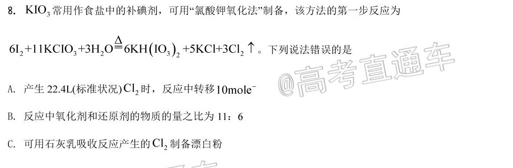
原始配图 1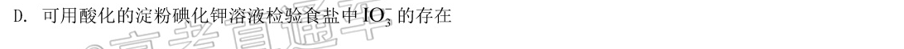
原始配图 2所用高中知识
氧化数、氧化还原计量、氯气吸收、碘量显色。
读题与思路
6I₂从0升到+5共失60e，11ClO₃⁻分别变5Cl⁻和3Cl₂共得60e；所以每1molCl₂对应20mol电子，A写10mol错误。全部氯酸钾为氧化剂，比例11:6；Cl₂可制漂白粉，酸性IO₃⁻可氧化I⁻给淀粉显色，B/C/D成立。
分步解析
- 6I₂中的12个I各失5e⁻，该组反应共转移60 mol电子，并产生3 mol Cl₂。故每产生1 mol Cl₂转移20 mol电子，A给10错误。
- KClO₃中Cl由+5降至−1或0，11 mol均作氧化剂；还原剂I₂为6 mol，B正确。
- Cl₂与石灰乳反应可制漂白粉。IO₃⁻+5I⁻+6H⁺→3I₂+3H₂O，生成I₂与淀粉显蓝，可检验碘酸根，C、D正确。
检查与易错点
不能只统计最终变成Cl₂的6个Cl所受电子，另有5个Cl变成Cl⁻也得电子。
本题来源：paper2021 · doc-paper
返回原卷说明与相对原子质量 返回单项选择题说明
题目与已知条件
常温下，用0.1000 mol·L⁻¹的盐酸分别滴定20.00mL浓度均为0.1000 mol·L⁻¹三种一元弱酸的钠盐（NaX、NaY、NaZ）溶液，滴定曲线如图所示。下列判断错误的是
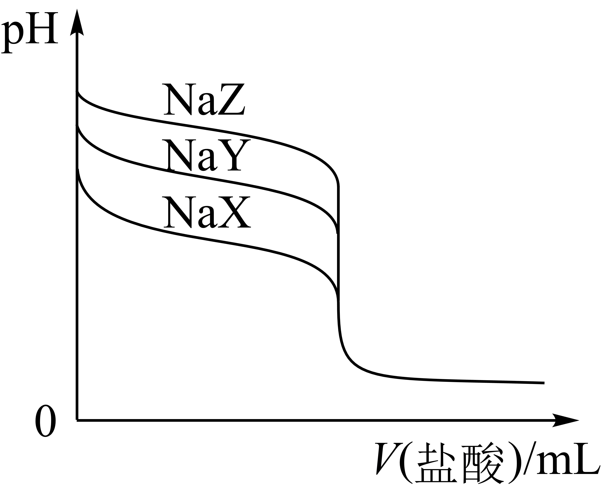
A. 该NaX溶液中：c(Na⁺)>c(X⁻)>c(OH⁻)>c(H⁺)
B. 三种一元弱酸的电离常数：Ka(HX)>Ka(HY)>Ka(HZ)
C. 当pH=7时，三种溶液中：c(X⁻)=c(Y⁻)=c(Z⁻)
D. 分别滴加20.00mL盐酸后，再将三种溶液混合：c(X⁻)+c(Y⁻)+c(Z⁻)=c(H⁺)−c(OH⁻)
查看原题图／原始配图
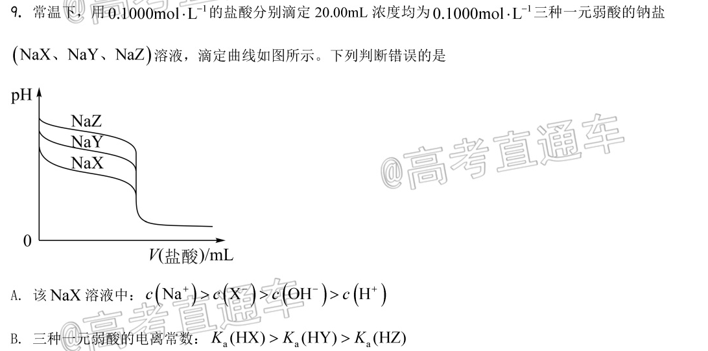
原始配图 1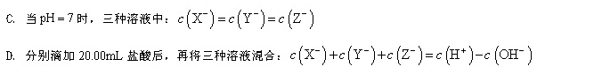
原始配图 2读题与思路
同浓度盐NaZ碱性最强，故其母酸HZ最弱，KaHX>KaHY>KaHZ。中性点由电荷守恒有[X⁻]=[Na⁺]−[Cl⁻]，但不同酸到pH7所需盐酸体积不同，浓度不必相同，C错误。各加20mL后Na⁺与Cl⁻物质的量相同，混合时剩余电荷守恒正得D。
分步解析
- NaX为弱酸强碱盐，水解少量，c(Na⁺)>c(X⁻)>c(OH⁻)>c(H⁺)，A成立。初始pH：NaZ>NaY>NaX，故酸性HX>HY>HZ，B成立。
- 当pH=7时c(H⁺)=c(OH⁻)，电荷守恒给c(X⁻)=c(Na⁺)−c(Cl⁻)。不同盐达到pH7所加HCl体积不同，分子中的剩余物质的量和分母总体积均不同，不能断言三阴离子浓度相等，C错误。
- 各加20.00 mL盐酸后n(Na⁺)=n(Cl⁻)，混合后仍抵消。剩余电荷守恒为c(X⁻)+c(Y⁻)+c(Z⁻)=c(H⁺)−c(OH⁻)，D正确。
检查与易错点
pH相同只保证H⁺、OH⁻相同，不保证其他离子浓度相同；滴定时别忽略体积变化。
本题来源：paper2021 · doc-paper
返回原卷说明与相对原子质量 返回单项选择题说明
题目与已知条件
锌溴液流电池是一种先进的水溶液电解质电池，广泛应用于再生能源储能和智能电网的备用电源等。三单体串联锌溴液流电池工作原理如图所示：
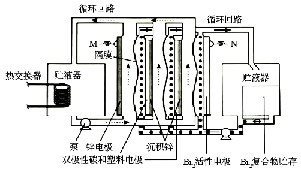
下列说法错误的是
A. 放电时，N极为正极
B. 放电时，左侧贮液器中ZnBr₂的浓度不断减小
C. 充电时，M极的电极反应式为Zn²⁺+2e⁻=Zn
D. 隔膜允许阳离子通过，也允许阴离子通过
查看原题图／原始配图
所用高中知识
可充电原电池、电极反应、离子迁移与电解质变化。
读题与思路
放电Zn负极被氧化，Br₂正极被还原，N为正极。ZnBr₂随放电生成而非减少，B错误。充电M上Zn²⁺+2e→Zn；隔膜允许离子迁移以维持溶液电中性。
分步解析
- 放电负极Zn→Zn²⁺+2e⁻，正极Br₂+2e⁻→2Br⁻；N连溴电极，为正极，A成立。
- 净反应Zn+Br₂→ZnBr₂，放电过程中Zn²⁺和Br⁻增加，左侧贮液器ZnBr₂浓度应增加，B错误。
- 充电时M侧Zn²⁺得电子沉积Zn，C成立。题图隔膜用于分隔活性物质而允许离子导通，可让阴阳离子通过维持电中性，D成立。
检查与易错点
液流电池溶液会循环，不能只看单个静止容器；三单体串联不改变每个单体的氧化还原规律。
本题来源：paper2021 · doc-paper
二、选择题：本题共4小题，每小题4分，共16分。在每小题给出的四个选项中，有一个或两个选项符合题目要求。全部选对的得4分，选对但不全的得2分，有选错的得0分。
相关题目：第 11 题 · 第 12 题 · 第 13 题 · 第 14 题
返回原卷说明与相对原子质量 返回不定项选择题说明
题目与已知条件
已知：A(g)+2B(g)⇌3C(g)ΔH<0，向一恒温恒容的密闭容器中充入1 mol A和3 mol B发生反应，t₁时达到平衡状态I，在t₂时改变某一条件，t₃时重新达到平衡状态Ⅱ，正反应速率随时间的变化如图所示。下列说法正确的是
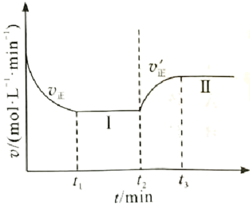
A. 容器内压强不变，表明反应达到平衡
B. t₂时改变的条件：向容器中加入C
C. 平衡时A的体积分数φ：φ(Ⅱ)>φ(Ⅰ)
D. 平衡常数K：K(Ⅱ)<K(Ⅰ)
查看原题图／原始配图
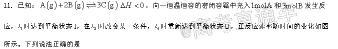
原始配图 1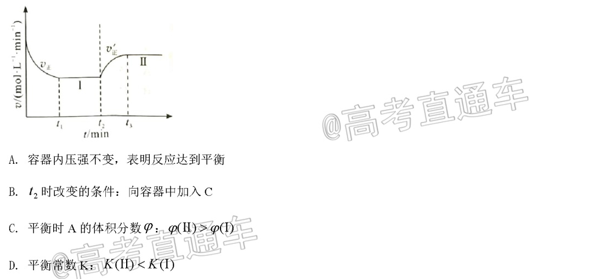
原始配图 2所用高中知识
等气体计量数反应、反应商、平衡组成、恒温K不变。
读题与思路
反应气体计量数不变，恒温恒容压强本来不变，不能据此判平衡。t₂正速率没有突跃却随后增大，对应加入C后先增逆速率、再因A/B生成而增正速率，B成立。初始B过量，平衡重新分配使A体积分数增大；温度不变K不变，所以BC。
分步解析
- 反应A+2B⇌3C前后总气体量相同，恒温恒容压强始终不变，A不能据此判平衡。
- t₂加入C，正反应物浓度瞬间不变，v正不突变；随后逆向移动使A、B增多，v正逐渐增大，符合曲线，B正确。
- 设两状态n(A)=a。由初始1 mol A、3 mol B，任何反应进度下n(B)=2a+1。加入C后逆移，a增大，n(B)/n(A)=2+1/a减小。恒温K=[n(C)/n(A)]³/[n(B)/n(A)]²不变，故n(C)/n(A)也减小。于是A分数=1/[1+n(B)/n(A)+n(C)/n(A)]增大，C成立。
- 温度没改变，K(Ⅱ)=K(Ⅰ)，D错误。
检查与易错点
不能只用“A的物质的量增加”就断言体积分数增加，因为总量也增加；这里已用K与过量B的守恒关系完成核验。
本题来源：paper2021 · doc-paper
返回原卷说明与相对原子质量 返回不定项选择题说明
题目与已知条件
对下列粒子组在溶液中能否大量共存的判断和分析均正确的是
|
粒子组 |
判断和分析 |
| A |
Na⁺、Al³⁺、Cl⁻、NH₃·H₂O |
不能大量共存，因发生反应：Al³⁺+4NH₃·H₂O=AlO₂⁻+4NH₄⁺+2H₂O |
| B |
H⁺、K⁺、S₂O₃²⁻、SO₄²⁻ |
不能大量共存，因发生反应：
2H⁺+S₂O₃²⁻=S↓+SO₂↑+H₂O |
| C |
Na⁺、Fe³⁺、SO₄²⁻、H₂O₂ |
能大量共存，粒子间不反应 |
| D |
H⁺、Na⁺、Cl⁻、MnO₄⁻ |
能大量共存，粒子间不反应 |
A. A B. B C. C D. D
查看原题图／原始配图
所用高中知识
弱碱与铝盐、硫代硫酸根酸化、氧化还原共存。
读题与思路
Al³⁺遇氨水析Al(OH)₃，不生成AlO₂⁻，A的理由错。S₂O₃²⁻+2H⁺→S+SO₂+H₂O符合原子/电荷守恒，B全对。Fe³⁺与H₂O₂存在氧化还原和催化分解作用；酸性高锰酸根会氧化Cl⁻，C/D不能大量共存。
分步解析
- A中Al³⁺与氨水会生成Al(OH)₃，但氨水不能把沉淀继续溶成AlO₂⁻；所写反应错误。
- S₂O₃²⁻遇酸歧化：S₂O₃²⁻+2H⁺→S↓+SO₂↑+H₂O，原子、电荷守恒，B的判断和说明都正确。
- Fe³⁺可与H₂O₂反应并参与其分解，不能判彼此不反应。酸性MnO₄⁻可氧化Cl⁻为Cl₂，D也不能大量共存。
检查与易错点
不定项题也可能只有一个答案。Fe³⁺既能参与氧化还原，又能催化H₂O₂分解，不能当作无作用的旁观离子。
本题来源：paper2021 · doc-paper
返回原卷说明与相对原子质量 返回不定项选择题说明
题目与已知条件
1-丁醇、溴化钠和70%的硫酸共热反应，经过回流、蒸馏、萃取分液制得1-溴丁烷粗产品，装置如图所示：
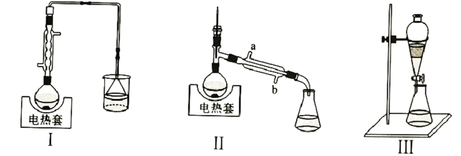
已知：CH₃(CH₂)₃OH+NaBr+H₂SO₄CH₃(CH₂)₃Br+NaHSO₄+H₂O
下列说法正确的是
A. 装置I中回流的目的是为了减少物质的挥发，提高产率
B. 装置Ⅱ中a为进水口，b为出水口
C. 用装置Ⅲ萃取分液时，将分层的液体依次从下放出
D. 经装置Ⅲ得到的粗产品干燥后，使用装置Ⅱ再次蒸馏，可得到更纯的产品
查看原题图／原始配图
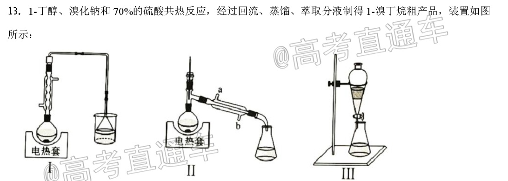
原始配图 1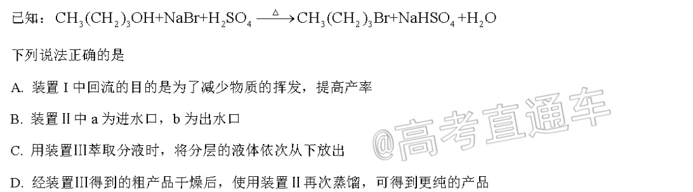
原始配图 2读题与思路
回流让挥发的原料冷凝回反应器，提高利用率，A成立；冷凝水应b下进a上出，B反；分液下层下放上层上倒，C错误；粗品干燥后二次蒸馏可除非挥发及不同沸点杂质，D成立。
分步解析
- Ⅰ中冷凝液回流减少1-丁醇等挥发损失，有利提高产率，A正确。
- Ⅱ冷凝管应b下口进水、a上口出水，使冷却套充满且逆流冷却，B把方向写反。
- Ⅲ分液应下层从下口放出，上层从上口倒出，防止上层被出口残留下层污染，C错误。
- 分出的粗产品先干燥除水，再蒸馏按沸点取馏分，可提高纯度，D正确。
检查与易错点
回流的目的不是让气体全部排出；蒸馏前干燥可避免水与产物一起被收集。
本题来源：paper2021 · doc-paper
返回原卷说明与相对原子质量 返回不定项选择题说明
题目与已知条件
铁的配合物离子(用[L−Fe−H]⁺表示)催化某反应的一种反应机理和相对能量的变化情况如图所示：
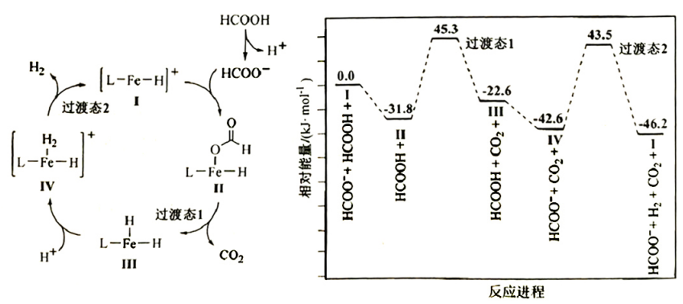
下列说法错误的是
A. 该过程的总反应为HCOOHCO₂↑+H₂↑
B. H⁺浓度过大或者过小，均导致反应速率降低
C. 该催化循环中Fe元素的化合价发生了变化
D. 该过程的总反应速率由Ⅱ→Ⅲ步骤决定
查看原题图／原始配图
所用高中知识
净反应、中间体、配体电荷、分步活化能。
读题与思路
按图保持L电荷不变，I的H⁻/+1、II的H⁻及HCOO⁻/中性、III的两个H⁻/中性、IV的H⁻及中性H₂/+1均给Fe相同形式氧化数，C不成立。II→III能垒45.3+31.8=77.1，IV→I能垒43.5+42.6=86.1，后者更大，D也错误。A净式HCOOH→CO₂+H₂成立；H⁺过大抑制甲酸电离、过小妨碍质子化，所以B成立。
分步解析
- 将循环各步叠加并消去催化剂及中间物，得HCOOH→CO₂+H₂，A正确。过高H⁺抑制HCOOH电离、降低HCOO⁻，过低H⁺又不利于需H⁺的步骤，B成立。
- 以L的电荷在循环中不变计：I有一个H⁻且总电荷+1；II有H⁻和HCOO⁻且中性；III有两个H⁻且中性；IV有H⁻、中性H₂且总电荷+1。各步Fe形式氧化数均相同，按中性L为+2，C“发生变化”错误。
- II→III的能垒45.3−(−31.8)=77.1 kJ·mol⁻¹；IV→I经过过渡态2，能垒43.5−(−42.6)=86.1 kJ·mol⁻¹，更高。因此题图给出的较慢控制步是IV→I，D错误。
检查与易错点
金属氢化物配体H按−1计，配位H₂按中性计；循环中Fe始终为+2价，配位数或成键数变化不等于氧化数变化，故C“化合价发生了变化”错误。决速步看能垒最大的一步（Ⅳ→Ⅰ，86.1 kJ·mol⁻¹），不是看哪一步放热或吸热最多。个别早期转载参考只列D，漏选了C。
本题来源：paper2021 · cross2021 · doc-paper
二、非选择题：包括必考题和选考题两部分。第15~17题为必考题，每个试题考生都必须作答。第18、19题为选考题，考生根据要求作答。
(一)必考题：此题包括3小题，共39分。
相关题目：第 15 题 · 第 16 题 · 第 17 题 · 第 18 题 · 第 19 题
返回原卷说明与相对原子质量 返回非选择题说明
题目与已知条件
(一)必考题：此题包括3小题，共39分。
碳酸钠俗称纯碱，是一种重要的化工原料。以碳酸氢铵和氯化钠为原料制备碳酸钠，并测定产品中少量碳酸氢钠的含量，过程如下：
步骤I.Na₂CO₃的制备
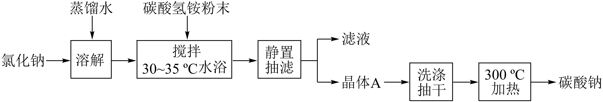
步骤Ⅱ.产品中NaHCO₃含量测定
①称取产品2.500g，用蒸馏水溶解，定容于250mL容量瓶中；
②移取25.00mL上述溶液于锥形瓶，加入2滴指示剂M，用0.1000 mol·L⁻¹盐酸标准溶液滴定，溶液由红色变至近无色(第一滴定终点)，消耗盐酸V₁ mL；
③在上述锥形瓶中再加入2滴指示剂N，继续用0.1000 mol·L⁻¹盐酸标准溶液滴定至终点(第二滴定终点)，又消耗盐酸V₂ mL；
④平行测定三次，V₁平均值为22.45，V₂平均值为23.51。
已知：(i)当温度超过35℃时，NH₄HCO₃开始分解。
(ii)相关盐在不同温度下的溶解度表g/(100 g H₂O)
| 温度/℃ |
0 |
10 |
20 |
30 |
40 |
50 |
60 |
| NaCl |
35.7 |
35.8 |
36.0 |
36.3 |
36.6 |
37.0 |
37.3 |
| NH₄HCO₃ |
11.9 |
15.8 |
21.0 |
27.0 |
|
|
|
| NaHCO₃ |
6.9 |
8.2 |
9.6 |
11.1 |
12.7 |
14.5 |
16.4 |
| NH₄Cl |
29.4 |
33.3 |
37.2 |
41.4 |
45.8 |
50.4 |
55.2 |
回答下列问题：
(1)步骤I中晶体A的化学式为_______，晶体A能够析出的原因是_______；
(2)步骤I中“300℃加热”所选用的仪器是_______(填标号)；
A.
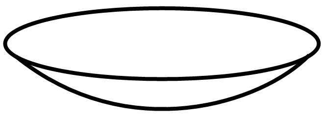
B.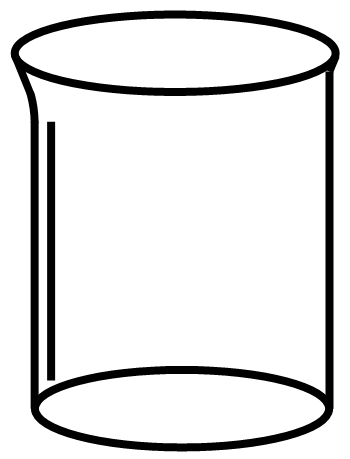
C.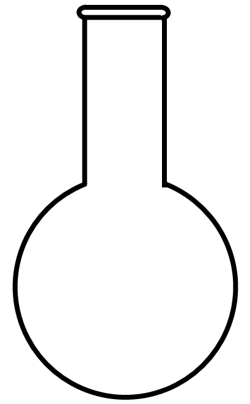
D.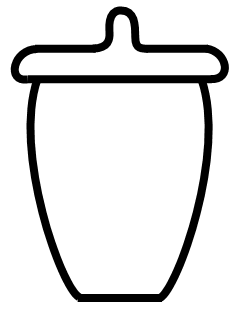
(3)指示剂N为_______，描述第二滴定终点前后颜色变化_______；
(4)产品中NaHCO₃的质量分数为_______(保留三位有效数字)；
(5)第一滴定终点时，某同学俯视读数，其他操作均正确，则NaHCO₃质量分数的计算结果_______(填“偏大”“偏小”或“无影响”)。
查看原题图／原始配图
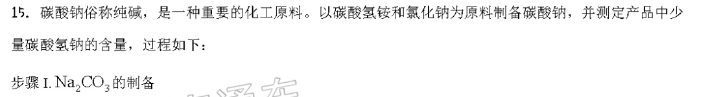
原始配图 1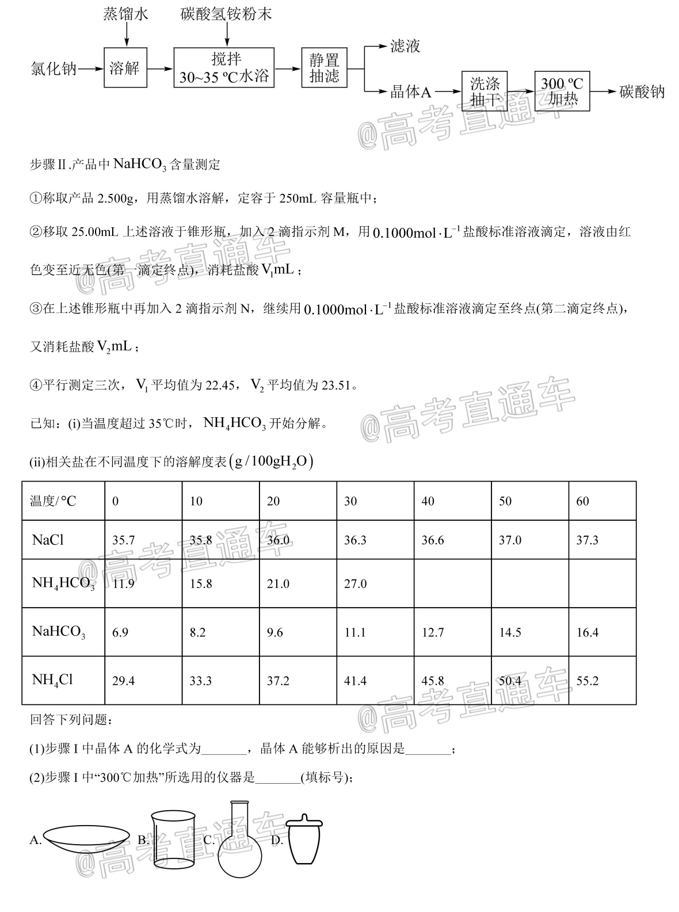
原始配图 2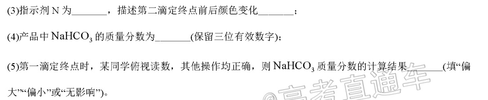
原始配图 3所用高中知识
溶解度差异、碳酸氢盐分解、两阶段滴定、读数误差。
读题与思路
30–35 ℃NaHCO₃溶解度在四盐中最低而析出，300 ℃固体分解用坩埚。第一段HCl耗量计原CO₃²⁻，第二段追加量计原CO₃²⁻+原HCO₃⁻，差1.06mL×0.1M给分样1.06×10⁻⁴molHCO₃⁻。全样×10×84/2.500=3.56%。第二指示剂甲基橙黄到橙；第一终点俯视使V₁偏小且V₂偏大，结果偏大。
分步解析
- （1）A为NaHCO₃。在30—35 ℃条件下它比同体系其他相关盐的溶解度小，NaCl与NH₄HCO₃反应使NaHCO₃达到饱和而析出。控制不超过35 ℃也减少NH₄HCO₃分解。
- （2）加热固体至300 ℃用坩埚，选D；2NaHCO₃→Na₂CO₃+CO₂↑+H₂O。
- （3）第一指示剂为酚酞；第二终点为碳酸氢根被完全滴定，需甲基橙，终点前黄色，终点为橙色且短时间内不恢复。
- （4）25.00 mL样液中n(CO₃²⁻)=cV₁；n(原有HCO₃⁻)=c(V₂−V₁)=0.1000×(23.51−22.45)×10⁻³=1.060×10⁻⁴ mol。全样为其10倍，m(NaHCO₃)=1.060×10⁻³×84=0.08904 g；w=0.08904/2.500×100%=3.56%。
- （5）滴定管刻度向下增大，第一终点俯视读数偏小，V₁偏小；它又是第二段起读数，因此V₂偏大，两效应均增大V₂−V₁，结果偏大。
答案
（1）NaHCO₃；在30～35 ℃时，NaHCO₃的溶解度在体系中各盐里最小，反应生成的NaHCO₃达到过饱和而析出。（2）D。（3）甲基橙；溶液由黄色变为橙色，且半分钟内不恢复黄色。（4）3.56%。（5）偏大。
检查与易错点
V₂是第二阶段另外消耗的体积，不是从零开始的总消耗。分取25/250需乘10；不能误用V₂−2V₁。
本题来源：paper2021 · doc-paper
返回原卷说明与相对原子质量 返回非选择题说明
题目与已知条件
氨气中氢含量高，是一种优良的小分子储氢载体，且安全、易储运，可通过下面两种方法由氨气得到氢气。
方法I：氨热分解法制氢气
相关化学键的键能数据
| 化学键 |
N≡N |
H−H |
N−H |
| 键能E/(kJ·mol⁻¹) |
946 |
436.0 |
390.8 |
一定温度下，利用催化剂将NH₃分解为N₂和H₂。回答下列问题：
(1)反应2NH₃(g)⇌N₂(g)+3H₂(g)ΔH=_______kJ·mol⁻¹；
(2)已知该反应的ΔS=198.9 J·mol⁻¹·K⁻¹，在下列哪些温度下反应能自发进行？_______(填标号)
A25℃ B.125℃ C.225℃ D.325℃
(3)某兴趣小组对该反应进行了实验探究。在一定温度和催化剂的条件下，将0.1 mol NH₃通入3L的密闭容器中进行反应(此时容器内总压为200kPa)，各物质的分压随时间的变化曲线如图所示。
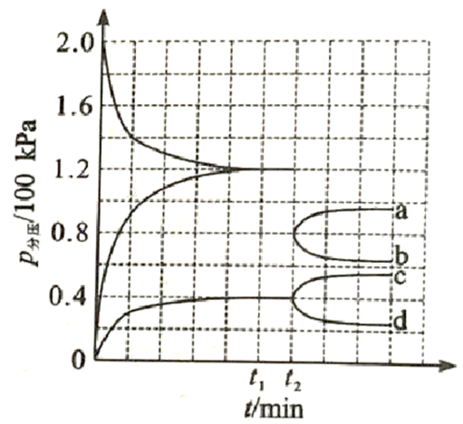
①若保持容器体积不变，t₁时反应达到平衡，用H₂的浓度变化表示0～t₁时间内的反应速率v(H₂)=_______mol·L⁻¹·min⁻¹(用含t₁的代数式表示)
②t₂时将容器体积迅速缩小至原来的一半并保持不变，图中能正确表示压缩后N₂分压变化趋势的曲线是_______(用图中a、b、c、d表示)，理由是_______；
③在该温度下，反应的标准平衡常数K⊖=_______。(已知：分压=总压×该组分物质的量分数，对于反应dD(g)+eE(g)⇌gG(g)+hH(g)，，其中p⊖=100 kPa，pG、pH、pD、pE为各组分的平衡分压)。
方法Ⅱ：氨电解法制氢气
利用电解原理，将氨转化为高纯氢气，其装置如图所示。
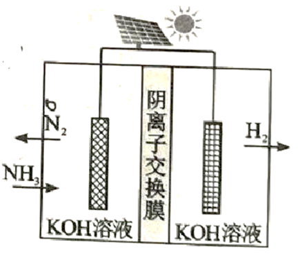
(4)电解过程中OH⁻的移动方向为_______(填“从左往右”或“从右往左”)；
(5)阳极的电极反应式为_______。
KOH溶液KOH溶液
查看原题图／原始配图
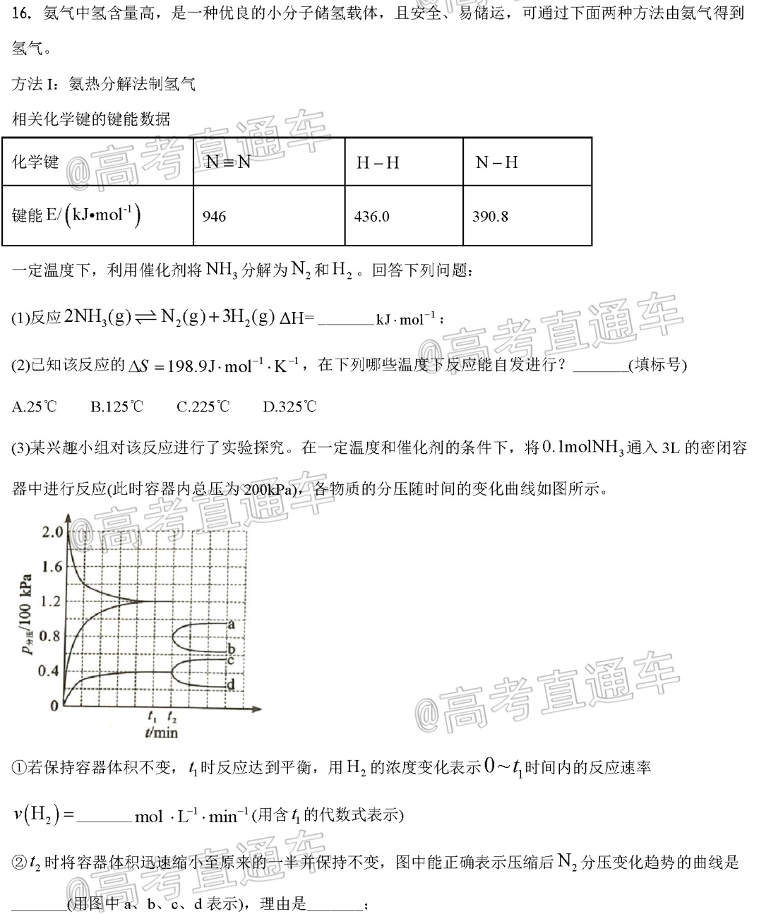
原始配图 1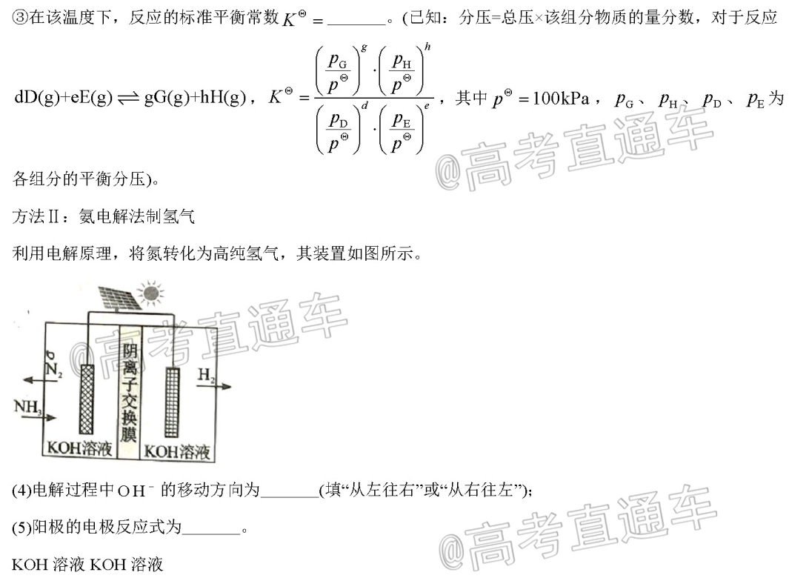
原始配图 2所用高中知识
键能焓变、ΔG判据、分压平衡、电解碱性半反应。
读题与思路
断键减成键：6×390.8−946−3×436=+90.8kJ/mol。ΔG<0须T>90800/198.9=456.5K，选CD。由200kPa对应0.1mol，120kPaH₂为0.06mol，v=0.020/t₁。压缩后N₂先从40到80kPa，再因逆移下降，选b。标准K=(0.4×1.2³)/(1.2²)=0.48。电解右阴极产OH⁻并向左阳极迁移，阳极2NH₃+6OH⁻→N₂+6H₂O+6e。
分步解析
- （1）断6个N—H键，形成1个N≡N和3个H—H键：ΔH=6×390.8−946−3×436.0=+90.8 kJ·mol⁻¹。
- （2）ΔG=ΔH−TΔS<0，T>90800/198.9≈456.5 K，即约183 ℃以上；选225 ℃和325 ℃，CD。
- （3）①同温同容n与p成正比。图示平衡p(H₂)=120 kPa，初始0.1 mol NH₃对应200 kPa，故n(H₂)=0.1×120/200=0.060 mol；v(H₂)=0.060/(3t₁)=0.020/t₁ mol·L⁻¹·min⁻¹。
- ②体积突减半，N₂分压先由40加倍至80 kPa；随后加压使平衡向气体量少的NH₃方向移动，N₂分压由80下降，符合b。③平衡p(NH₃)=120、p(N₂)=40、p(H₂)=120 kPa，K°=(0.4×1.2³)/(1.2²)=0.48，为无量纲。
- （4）左极NH₃氧化产N₂，是阳极；右极析H₂，产生OH⁻。阴离子OH⁻经膜从右往左移动。
- （5）阳极：2NH₃+6OH⁻→N₂+6H₂O+6e⁻。右极6H₂O+6e⁻→3H₂+6OH⁻，相加得2NH₃→N₂+3H₂。
答案
（1）+90.8。（2）CD。（3）0.020/t₁；b；0.48。（4）从右往左。（5）2NH₃+6OH⁻−6e⁻→N₂+6H₂O。
检查与易错点
ΔS给J，计算温度阈值时需把ΔH的kJ换J。标准平衡常数与直接用kPa相乘的有量纲Kp不是同一数值。
本题来源：paper2021 · doc-paper
返回原卷说明与相对原子质量 返回非选择题说明
题目与已知条件
Ce₂(CO₃)₃可用于催化剂载体及功能材料的制备。天然独居石中，铈(Ce)主要以CePO₄形式存在，还含有SiO₂、Al₂O₃、Fe₂O₃、CaF₂等物质。以独居石为原料制备Ce₂(CO₃)₃·nH₂O的工艺流程如下：
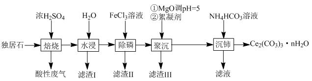
回答下列问题：
(1)铈的某种核素含有58个质子和80个中子，该核素的符号为_______；
(2)为提高“水浸”效率，可采取的措施有_______(至少写两条)；
(3)滤渣Ⅲ的主要成分是_______(填化学式)；
(4)加入絮凝剂的目的是_______；
(5)“沉铈”过程中，生成Ce₂(CO₃)₃·nH₂O的离子方程式为_______，常温下加入的NH₄HCO₃溶液呈_______(填“酸性”“碱性”或“中性”)(已知：NH₃·H₂O的Kb=1.75×10⁻⁵，H₂CO₃的Ka1=4.4×10⁻⁷，Ka2=4.7×10⁻¹¹)；
(6)滤渣Ⅱ的主要成分为FePO₄，在高温条件下，Li₂CO₃、葡萄糖(C₆H₁₂O₆)和FePO₄可制备电极材料LiFePO₄，同时生成CO和H₂O，该反应的化学方程式为_______
查看原题图／原始配图
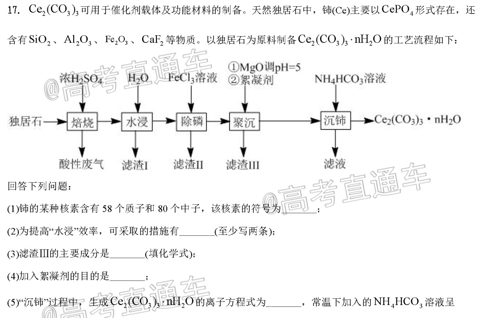
原始配图 1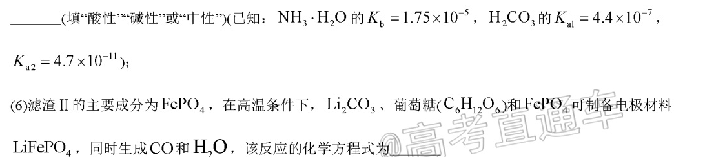
原始配图 2所用高中知识
核素表示、浸取、胶体絮凝、酸碱平衡、质量及电子守恒。
读题与思路
核素质量数58+80=138。提高接触与传质可粉碎、搅拌和适当升温。除磷后pH5使Al³⁺沉Al(OH)₃，残余Fe³⁺也可沉淀；絮凝用于细颗粒聚集分离。沉铈2Ce³⁺+6HCO₃⁻+nH₂O→Ce₂(CO₃)₃·nH₂O+3CO₂+3H₂O。HCO₃⁻水解Kb=2.27×10⁻⁸大于NH₄⁺Ka=5.71×10⁻¹⁰，溶液碱性。按元素和电子双守恒得6FePO₄+3Li₂CO₃+C₆H₁₂O₆→6LiFePO₄+9CO+6H₂O。
分步解析
- （1）质量数58+80=138，核素为13858Ce。（2）适度加热、搅拌、增大水与焙烧产物的接触面积（如粉碎）均能提高水浸效率。
- （3）FeCl₃除磷后，调pH=5使Al³⁺水解沉淀，滤渣III主要为Al(OH)₃；除磷后残留的Fe³⁺也会在这一pH下形成Fe(OH)₃。（4）絮凝剂使细小Al(OH)₃等颗粒聚集，便于沉降过滤，并非凭空改变铝的物质的量。
- （5）2Ce³⁺+6HCO₃⁻+nH₂O→Ce₂(CO₃)₃·nH₂O↓+3CO₂↑+3H₂O；将两边水约去，也可写左边(n−3)H₂O。
- NH₄⁺酸性常数=10⁻¹⁴/(1.75×10⁻⁵)=5.71×10⁻¹⁰；HCO₃⁻的水解碱性常数=10⁻¹⁴/(4.4×10⁻⁷)=2.27×10⁻⁸，明显大于前者及其自身电离常数4.7×10⁻¹¹，因此溶液呈碱性。
- （6）设葡萄糖系数1，则水为6；FePO₄系数a，Li₂CO₃为a/2，CO为6+a/2。氧守恒：4a+3a/2+6=4a+(6+a/2)+6，得a=6。配平为6FePO₄+3Li₂CO₃+C₆H₁₂O₆→6LiFePO₄+9CO↑+6H₂O↑（高温）。
- 电子核验：葡萄糖6个C平均0价变+2，失12e⁻；3个碳酸根C由+4变+2得6e⁻，6个Fe由+3变+2得6e⁻，电子收支12=6+6。
答案
（1）¹³⁸₅₈Ce。（2）适当升高温度、搅拌、将焙烧产物粉碎等（任写两条）。（3）Al(OH)₃。（4）使细小的Al(OH)₃等颗粒聚集沉降，便于过滤分离。（5）2Ce³⁺+6HCO₃⁻+(n−3)H₂O ══ Ce₂(CO₃)₃·nH₂O↓+3CO₂↑；碱性。（6）6FePO₄+3Li₂CO₃+C₆H₁₂O₆ ══(高温) 6LiFePO₄+9CO↑+6H₂O↑。
检查与易错点
转载参考第(6)另列CO₂副产物，与本题只给CO、H₂O的限制不符。本式是按已见题面独立配平；不冒充官方更正。
本题来源：paper2021 · cross2021 · doc-paper
(二)选考题：共15分。请考生从给出的两道题中任选一题作答。如果多做，则按所做的第一题计分。
相关题目：第 18 题 · 第 19 题
返回原卷说明与相对原子质量 返回非选择题说明 返回选考题说明
题目与已知条件
(二)选考题：共15分。请考生从给出的两道题中任选一题作答。如果多做，则按所做的第一题计分。
[选修3：物质结构与性质]
硅、锗(Ge)及其化合物广泛应用于光电材料领域。回答下列问题：
(1)基态硅原子最外层的电子排布图为_______，晶体硅和碳化硅熔点较高的是_______(填化学式)；
(2)硅和卤素单质反应可以得到SiX₄，SiX₄的熔沸点如下表：
|
SiF₄ |
SiCl₄ |
SiBr₄ |
SiI₄ |
| 熔点/K |
183.0 |
203.2 |
278.6 |
393.7 |
| 沸点/K |
187.2 |
330.8 |
427.2 |
560.7 |
①0℃时，SiF₄、SiCl₄、SiBr₄、SiI₄呈液态的是____(填化学式)，沸点依次升高的原因是_____，气态SiX₄分子的空间构型是_______；
②SiCl₄与N-甲基咪唑
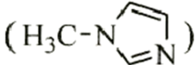
反应可以得到M²⁺，其结构如图所示：
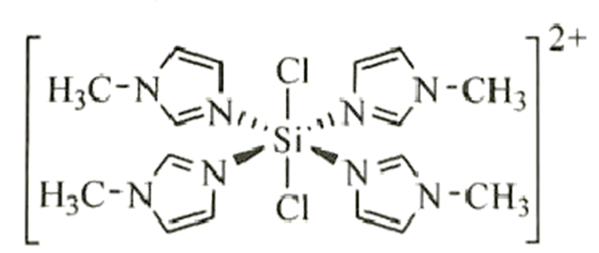
N-甲基咪唑分子中碳原子的杂化轨道类型为_______，H、C、N的电负性由大到小的顺序为_______，1个M²⁺中含有_______个σ键；
(3)下图是Mg、Ge、O三种元素形成的某化合物的晶胞示意图。
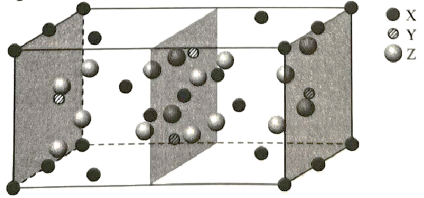
①已知化合物中Ge和O的原子个数比为1：4，图中Z表示_______原子(填元素符号)，该化合物的化学式为_______；
②已知该晶胞的晶胞参数分别为anm、bnm、cnm，α=β=γ=90°，则该晶体的密度ρ=_______g·cm⁻³(设阿伏加德罗常数的值为NA，用含a、b、c、NA的代数式表示)。
查看原题图／原始配图
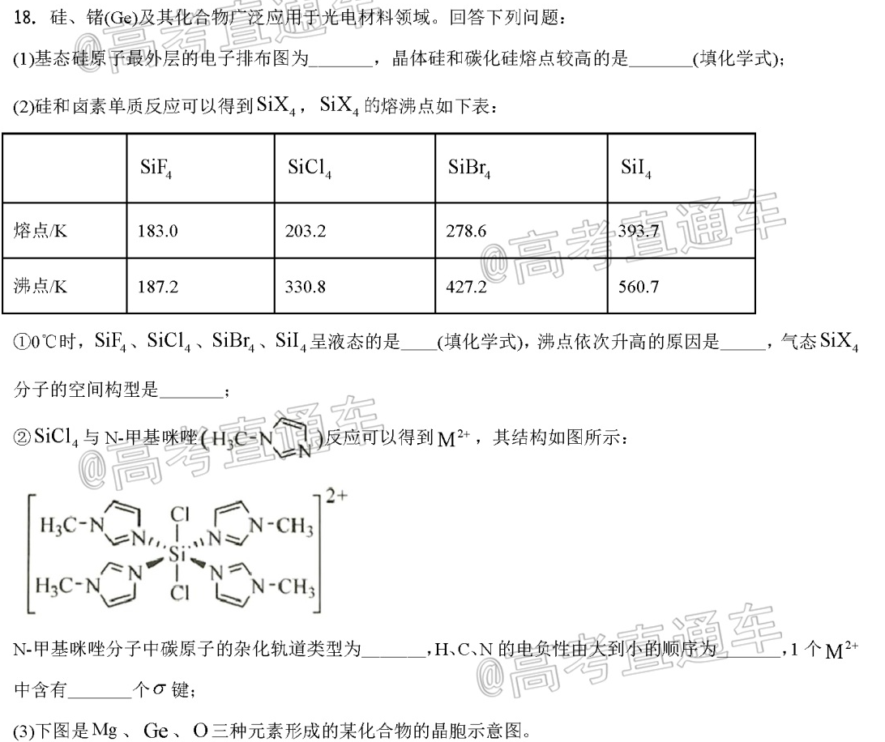
原始配图 1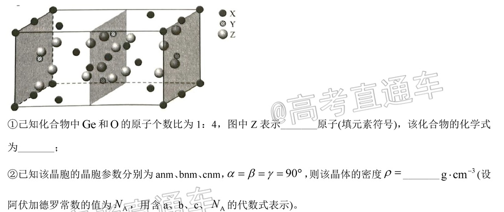
原始配图 2所用高中知识
轨道排布、共价网络、分子间作用、σ键计数和均摊法。
读题与思路
Si价层3s²3p²，SiC键更强熔点较高；273K只有SiCl₄在熔/沸点之间。SiX₄正四面体，向I分子极化性增强导致沸点增。配体碳sp²/sp³，电负性N>C>H；每配体12σ键，4×12+4配位+2SiCl=54。晶胞按均摊Mg8、Ge4、O16，Mg₂GeO₄每胞4式量；ρ=4×185×10²¹/(abcNA)。
分步解析
- （1）Si价电子3s²3p²，轨道框图为3s[↑↓]，3p[↑][↑][ ]。SiC与Si均为共价晶体，Si—C键一般比Si—Si键短而强，SiC熔点更高。
- （2）①273 K在SiCl₄的熔点203.2 K和沸点330.8 K之间，故液态仅SiCl₄。SiF₄到SiI₄结构相似、分子逐渐增大，分子间作用增强，沸点升高；四个Si—X键无孤电子对，分子正四面体。
- ②N-甲基咪唑环碳sp²、甲基碳sp³；电负性N>C>H。每配体环上5个σ键、N—CH₃ 1个、C—H 6个，共12；四配体共48，加4个Si—N配位σ键和2个Si—Cl，共54。
- （3）①X按均摊计8×⅛+6×½+4×¼+3=8。结合化合物电中性及Ge∶O=1∶4，组成应为Mg₂GeO₄；X为Mg，每胞4个式量单位，Y为Ge 4个、Z为O 16个，故Z=O。
- ②式量2×24+73+4×16=185；每胞质量4×185/Nₐ=740/Nₐ g。体积abc×10⁻²¹ cm³，密度740×10²¹/(abcNₐ) g·cm⁻³。
答案
（1）3s[↑↓]3p[↑][↑][ ]；SiC。（2）SiCl₄；分子间作用增强；正四面体；sp²、sp³；N>C>H；54。（3）O；Mg₂GeO₄；740×10²¹/(abcNₐ) g·cm⁻³。
检查与易错点
配位键也是σ键；双键只含一个σ键。晶胞图中内剖面不是晶胞边界，处在内剖面上的原子不能机械乘½。
本题来源：paper2021 · doc-paper
返回原卷说明与相对原子质量 返回非选择题说明 返回选考题说明
题目与已知条件
[选修5：有机化学基础]
叶酸拮抗剂Alimta(M)是一种多靶向性抗癌药物。以苯和丁二酸酐为原料合成该化合物的路线如下：
回答下列问题：
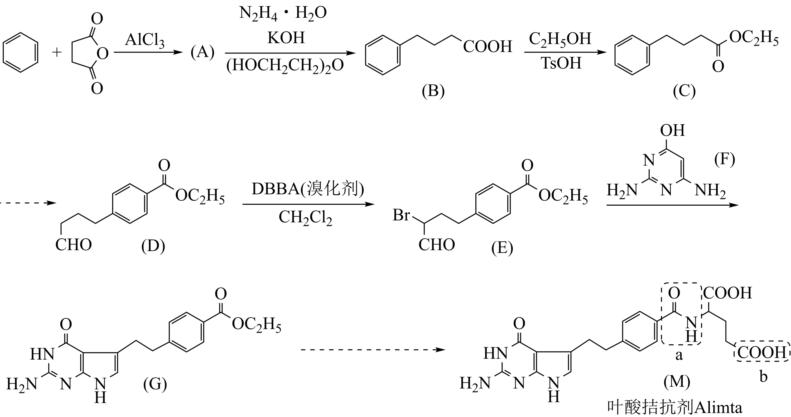
已知：①
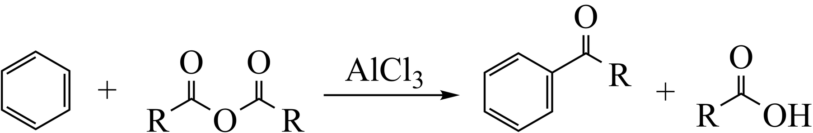
②
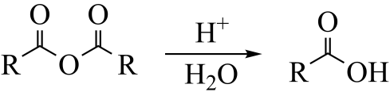
(1)A的结构简式为_______；
(2)A→B，D→E的反应类型分别是_______，_______；
(3)M中虚线框内官能团的名称为a_______，b_______；
(4)B有多种同分异构体，同时满足下列条件的同分异构体有_______种(不考虑立体异构)
①苯环上有2个取代基②能够发生银镜反应③与FeCl₃溶液发生显色反应
其中核磁共振氢谱有五组峰，且峰面积之比为6：2：2：1：1的结构简式为_______；
(5)结合上述信息，写出丁二酸酐和乙二醇合成聚丁二酸乙二醇酯的反应方程式_______；
(6)参照上述合成路线，以乙烯和为原料，设计合成的路线_______(其他试剂任选)。
查看原题图／原始配图
原始配图 1原始配图 2修订前解析配图 3
所用高中知识
酸酐开环酰基化、还原、卤代、同分异构体、缩聚和合成迁移。
读题与思路
丁二酸酐开环酰化给PhCOCH₂CH₂COOH；还原酮成CH₂给B，D→E为醛α溴代取代。a酰胺、b羧基。B为C₁₀H₁₂O₂，需酚羟基与含4C醛侧链，侧链5类×邻间对3位置=15；6:2:2:1:1对应对HO—C₆H₄—C(CH₃)₂CHO。酸酐与乙二醇聚酯可按重复单元写净脱水式，显式线性端基时为n−1水。乙烯水合、乙醇氧化、乙醛α溴代，再与题给嘧啶衍生物环合。
分步解析
- （1）丁二酸酐在AlCl₃作用下与苯反应，环酐开环，一端与苯形成酮，另一端为羧酸：A=C₆H₅—C(=O)—CH₂—CH₂—COOH。
- （2）A→B将酮羰基还原为CH₂，为还原反应；D→E在醛基邻位以Br取代H，为取代反应。（3）M中a为酰胺基—CONH—，b为羧基。
- （4）B为C₁₀H₁₂O₂，苯环上两个取代基必须一个为酚OH，另一个含CHO且共有4个C。侧链5类可写：—CH₂CH₂CH₂CHO、—CH(CH₃)CH₂CHO、—CH(CH₂CH₃)CHO、—C(CH₃)₂CHO、—CH₂CH(CH₃)CHO。每类与OH有邻、间、对3种位置，共5×3=15。
- 峰面积6∶2∶2∶1∶1要求两个等效CH₃及对位二取代苯环，结构为对HO—C₆H₄—C(CH₃)₂—CHO。五组分别为6H甲基、2H/2H环氢、1H醛氢、1H酚羟基。
- （5）丁二酸酐水解为HOOCCH₂CH₂COOH；与HOCH₂CH₂OH缩聚。按重复单元忽略端基的净式：n丁二酸酐+nHOCH₂CH₂OH→[—COCH₂CH₂COOCH₂CH₂O—]ₙ+nH₂O（催化、加热）。每单元C₆H₈O₄，100+62=144+18的质量核对成立。若明确写出单条开链聚酯的端基，则为n丁二酸酐+nHOCH₂CH₂OH→HO—[COCH₂CH₂COOCH₂CH₂O]ₙ—H+(n−1)H₂O；两种写法的差别只在是否显式计入链端。
- （6）CH₂=CH₂ —H₂O、酸催化→ CH₃CH₂OH —O₂/Cu、加热→ CH₃CHO —题给DBBA溴化→ BrCH₂CHO。再把BrCH₂CHO与题给2,4-二氨基-6-羟基嘧啶按E→G的信息反应，缩合成题示并环产物，脱去HBr与H₂O。溴代必须在醛的α位，不能生成CH₃COBr酰溴。
答案
（1）C₆H₅COCH₂CH₂COOH。（2）还原；取代。（3）酰胺基；羧基。（4）15；对HO—C₆H₄—C(CH₃)₂CHO。（5）n 丁二酸酐 + n HOCH₂CH₂OH →(一定条件) HO—[COCH₂CH₂COOCH₂CH₂O]ₙ—H + (n−1)H₂O。（6）乙烯→乙醇→乙醛→溴乙醛，与题给嘧啶衍生物环合。
检查与易错点
第(5)若分两步写，水解消耗nH₂O、缩聚生成2nH₂O，净生成nH₂O；直接把酸酐视作二酸会多写一份水。异构计数只排构造，不计立体异构。
本题来源：paper2021 · doc-paper
题源与核验说明
- 2021.html旧版解析文件；SHA-256：848d1da448510d763a8041889e2b4c120206665d04b4c4f002eb46abd7582dfa
- _2021年高考真题——化学（湖南卷） Word版含解析【KS5U 高考】.doc原卷文件；SHA-256：8ea438259226cc378ed16bb841b8e46ccf660b2365c99787e2389fb16f430372
- 高考直通车：2021湖南化学真题及参考答案同卷题面或参考资料的公开来源；参考答案仅作对照，解析按题设给出推导。
- 考试卷网：2021湖南化学题面与参考同卷题面或参考资料的公开来源；参考答案仅作对照，解析按题设给出推导。